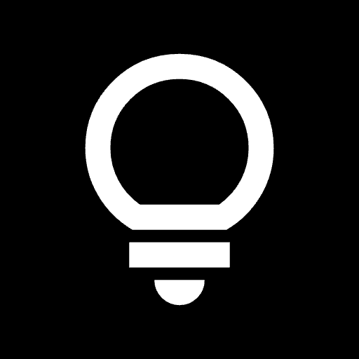
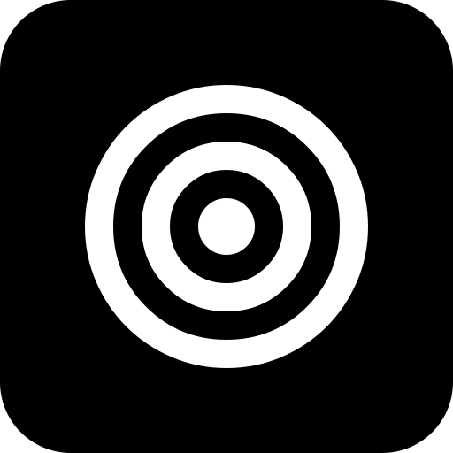
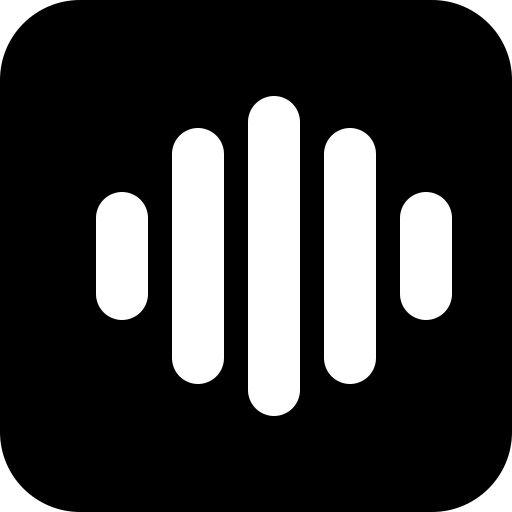
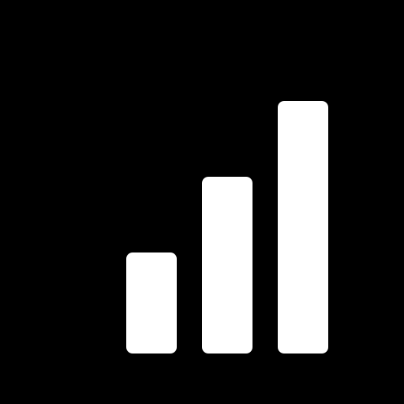

A structured practice toolkit for musicians

Fresh sight-reading practice for classical guitar.
Build real sight-reading skills with new exercises whenever you practice. Choose your level and get material designed specifically for classical guitar, so you can focus on reading rather than remembering exercises you've already played.
Give your practice session some structure.
Plan what you want to work on, give each piece or exercise its own time, and keep track of the repertoire you're studying. Practice Mate helps you spend your time intentionally without turning practice into a productivity exercise.
A sheet music reader designed for practice and performance
Read PDFs and digital scores in a comfortable, eye-friendly format. Customize the score tint with options such as sepia to reduce eye strain, organize your scores, and bookmark pages for quick access. For XML scores, use synthesized playback and create loops to practice difficult passages. Share scores through connected cloud storage, including Google Drive.
See, review, and evaluate your playing while you practice.
Use your phone, tablet, or computer as a practice mirror to check posture, hand position, movement, and technique. Record a take when you want a closer look, trim it, and download or share it via direct YouTube upload.

Focused spot practice for difficult passages.
Practice the whole piece methodically without playing it from beginning to end every time. Spot Practice helps you divide a score into manageable sections, focus on one passage at a time, and work through different spots systematically. By rotating through sections and returning to difficult passages, you can build reliable technique and musical memory while avoiding the habit of simply running through the entire piece during the early stages of learning.
A different way to build speed and accuracy.
Work toward faster tempos by moving between comfortable playing, faster bursts, and recovery tempos instead of simply increasing the metronome a few beats at a time. Inspired by Dr. Molly Gebrian’s neuroscience-based methodology on interleaved practice in music learning and performance training.
Real accountability for clean, consistent repetitions.
Choose how many clean repetitions you want in a row. Each successful attempt moves you closer to your goal; a mistake resets the count. It's a simple way to turn “I think I know this” into consistent playing you can trust.

A metronome made for long practice sessions.
Get the timing tools you need without digging through menus. Rhythm Weaver combines a comfortable click sound with tempo, meter, subdivisions, rhythmic patterns, and practice controls on one screen.

Make scale practice less automatic.
Scaled varies what you practice so scales don't become the same mechanical routine every day. Move through different keys and right-hand finger combinations while keeping track of your practice goals.
A clear, stable tuner for musicians.
Tune quickly with a bold circular dial that clearly shows how sharp or flat you are with smooth visual feedback. Pitch Mate gives you a large, high-contrast display that is easy to read from a music stand, with custom A4 calibration for playing at reference pitches other than 440 Hz.
I created these tools to bring more structure to my practice. While balancing work, life, and music, I realized I needed to be more disciplined and focused in order to make the most of the time I can dedicate to practicing.